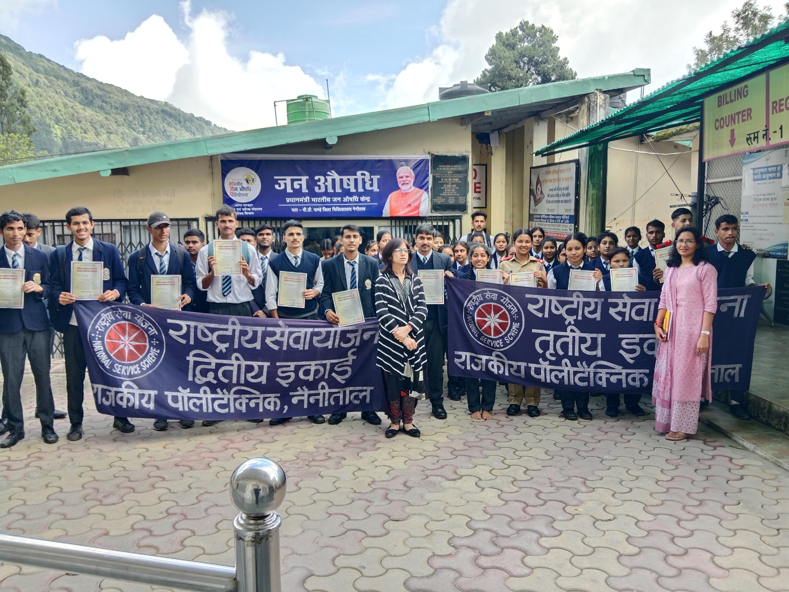
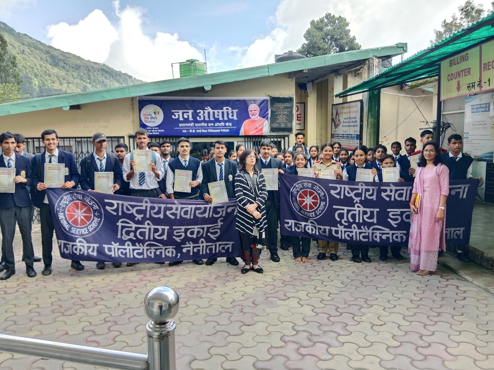
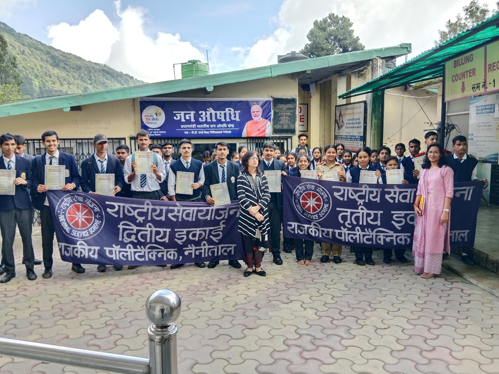

Gallery
 


Welcome to Government Polytechnic Nainital. Our mission is to provide quality technical education that empowers students to excel in their chosen fields. We are committed to fostering an environment of innovation and excellence..
Established in 1975, Government Polytechnic Nainital is a premier technical education institute located in Nainital, Uttarakhand. Affiliated with the Uttarakhand Technical Education Board and approved by AICTE, we offer a range of diploma courses in engineering and technology.We offer state-of-the-art diploma programs across key engineering and technical fields with modern labs and experienced faculty.
This department trains students in the planning, designing, and construction of infrastructure such as roads, buildings, and bridges.
Provides knowledge in electrical circuits, machines, and power systems essential for various industrial applications.
Deals with the study of electronic devices, communication systems, and embedded systems used in various sectors.
Focuses on the design and production of machinery, offering hands-on experience in thermal, manufacturing, and production engineering.
This branch teaches programming, web development, databases, and networking to prepare students for the IT industry.
Offers education in pharmaceutical sciences, drug formulation, and healthcare practices under the guidelines of PCI.
The Modern Office Management & Secretarial Practice branch equips students with office procedures, communication, and clerical skills.
